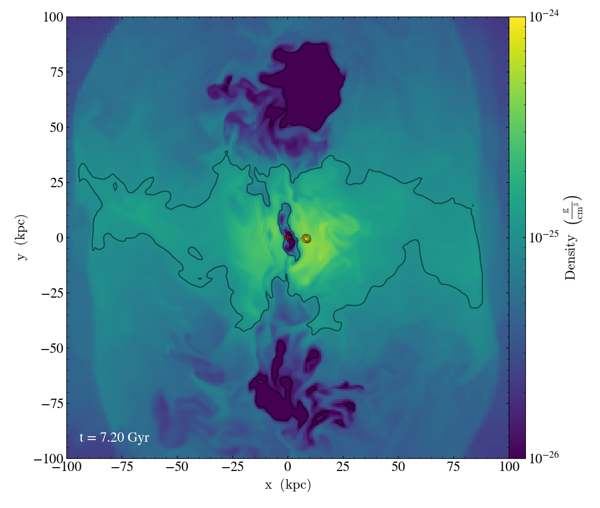
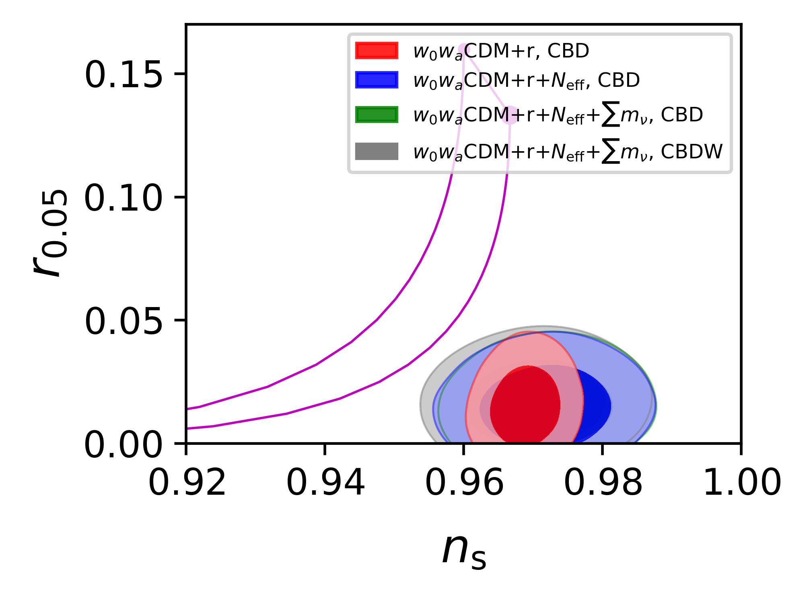
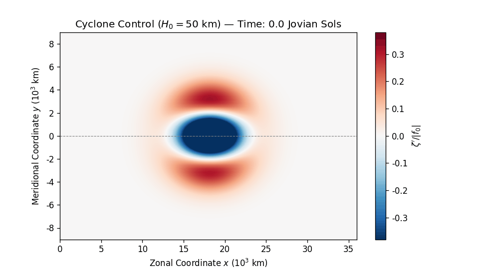

Research
Computational Astrophysics, Galaxy Cluster Hydrodynamics, and Cosmological Neutrino Physics.
My research focuses on bridging theoretical astrophysics and observational data through high-performance numerical simulations and Bayesian statistical inference. Currently, I study feedback-driven gas dynamics in merging galaxy clusters and cosmological parameter constraints on neutrino masses.
1. Heating and Cooling Balance in Merging Cool-Core Galaxy Clusters
Institute of Astronomy, NTHU (Oct 2024 – Present) | Advisor: Prof. Hsiang-Yi Karen Yang

Cool-core galaxy clusters exhibit short central radiative cooling times, requiring continuous heating mechanisms to prevent runaway cooling flows. Using 3D adaptive-mesh-refinement (AMR) hydrodynamic simulations with GAMER-2, I investigate the survival of cool cores and thermal balance during cluster mergers (modeled after Perseus- and Abell 1795-like systems) under self-regulated AGN feedback.
- Helmholtz Velocity Decomposition: Quantified compressive and solenoidal turbulent energy dissipation across merger parameter suites (varying AGN jet power and merger angular momentum).
- Key Findings: Demonstrated that merger-driven turbulence alone dissipates too inefficiently to offset radiative cooling, whereas self-regulated AGN feedback sustains intense core turbulence and preserves thermal equilibrium.
2. Cosmological Neutrino Mass Bounds and Dynamical Dark Energy
Institute of Astronomy & Astrophysics, Academia Sinica (Jul 2025 – Feb 2026) | Advisor: Dr. Shouvik Roy Choudhury

Cosmological surveys provide stringent probes of the total neutrino mass (Σmν$\sum m_\nu$), though parameter constraints remain sensitive to the underlying dark energy equation of state. I performed Bayesian MCMC parameter inference using Cobaya to explore degeneracies between neutrino physics and late-time cosmic acceleration.
- Multi-Probe Analysis: Combined DESI BAO, Planck CMB, and Type Ia supernovae datasets to constrain Σmν within ΛCDM and dynamical dark energy (w0waCDM) frameworks.
- Key Findings: Evaluated how dynamical dark energy parameterizations relax or shift upper bounds on total neutrino mass relative to standard ΛCDM.
3. Shallow-Water Modeling of Jovian Vortex Dynamics
Computational Fluid Dynamics Project | Department of Physics, NTHU

Simulated the long-term stability, zonal jet interactions, and vortex merger dynamics of Jupiter's Great Red Spot using a 1.5-layer shallow-water fluid model, exploring potential vorticity conservation in planetary atmospheres.